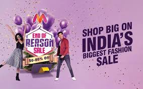
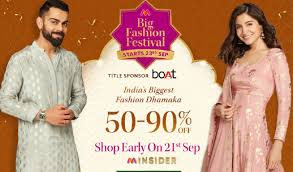

How India's fashion e-commerce leader engineered shopping festivals, reverse psychology storytelling, and mass-market festive conversion to dominate the category.
Myntra's campaigns are not just seasonal sales — they are engineered growth systems that combine entertainment, pricing psychology, and platform-driven conversion. The brand consistently controls how people feel about the sale before they even see the discount.
This case study breaks down two of Myntra's most successful campaigns using a structured marketing framework: End of Reason Sale (EORS) — Myntra's flagship fashion spectacle — and Big Fashion Festival (BFF) — its festive-season market expansion engine.
Together they reveal two different strategic models: EORS is built for maximum attention and hype; BFF is built for clarity and mass conversion. One creates excitement; the other simplifies decision-making.
EORS is Myntra's flagship growth engine — designed not as a discount campaign but as a cultural event that drives massive traffic spikes. The campaign's core objective is to dominate attention during sale periods while converting that attention into app installs, purchases, and repeat users.
The campaign used storytelling instead of traditional retail advertising — featuring Shah Rukh Khan and Karan Johar using humor and reverse psychology (telling people not to shop) to create curiosity and engagement. This approach increased watch time and recall, directly impacting conversion.
"People don't come just to buy — they come because they feel they might miss something big. That 'shopping festival mindset' is the real product EORS sells."
The funnel was tightly structured: awareness through high-impact creatives → consideration through influencer layers → conversion through app-driven urgency and deal mechanics. Multiple creatives and influencer assets allowed rapid testing and scaling in real time.

Unlike EORS, which is built around scale and spectacle, BFF is built around accessibility and mass appeal — particularly targeting non-metro consumers. The campaign aligned strategy with real consumer behavior: festive shopping across ethnic wear, jewellery, and family apparel.
The positioning was value-driven but simplified. The "3X offer" structure — combining brand discounts, platform deals, and bank offers — created a clear and compelling value proposition. Instead of overwhelming users with multiple offers, Myntra simplified communication into one strong value promise.
"BFF removes complexity from festive shopping and gives users a clear reason to buy immediately. Clarity outperforms complexity every time in conversion-focused campaigns."
Featuring Ranbir Kapoor, Kiara Advani, and digital creators bridged the gap between metro and non-metro audiences. The campaign's success in driving a large share of orders from non-metros highlights its effectiveness in tapping new markets — geographic expansion as a core campaign KPI.

EORS created the "biggest fashion event" positioning — making consumers participate in a cultural moment rather than simply respond to a discount notification.
Limited inventory triggers, early access for insiders, and flash deal mechanics create urgency that shortens purchase decision windows dramatically.
Telling people not to shop created curiosity and engagement that straightforward promotional messaging never could — a counterintuitive move that worked brilliantly.
BFF's single strong value promise — 3X offer — outperformed complex multi-offer communication for non-metro audiences where clarity drives conversion faster than hype.
Using campaigns to deliberately penetrate Tier 2 and Tier 3 markets — not just deepen metro reach — is a growth strategy that multiplies total addressable market.
EORS and BFF are properties, not one-off campaigns. Annual repetition builds anticipation, recall, and ritual — compounding brand value across every cycle.
EORS is built for maximum attention and hype; BFF is built for clarity and mass conversion. Together, they cover both ends of the consumer journey — desire and action — which is the complete marketing loop that most brands fail to close simultaneously.
The biggest lesson is that successful campaigns are not just about offers — they are about perception. Myntra wins because it controls how people feel about the sale before they even see the discount. That emotional positioning is worth far more than any additional percentage off.
Brands should focus on turning campaigns into repeatable properties, simplifying their value proposition for mass markets, and aligning creative storytelling with real consumer behavior — festive intent, aspiration, and belonging.
At Brand Business Talk, we help brands with research, strategy, market insights, and growth recommendations. Let's build your brand growth strategy together.